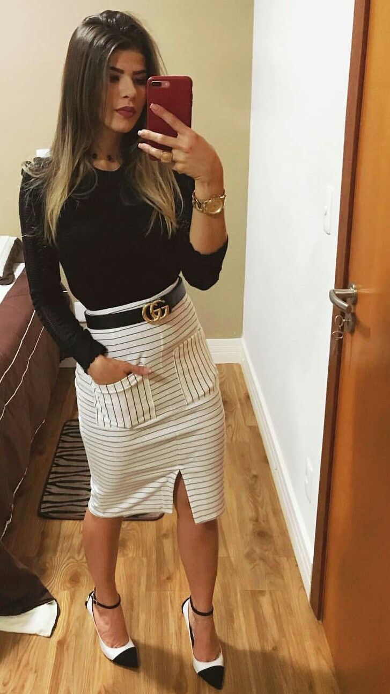
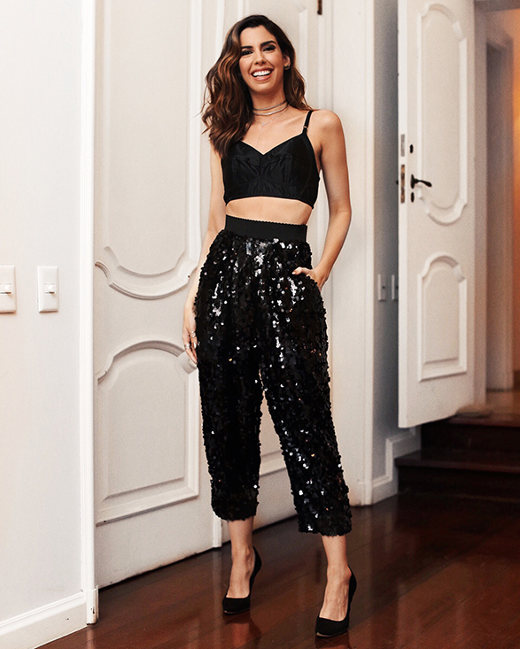

Bem vindos ao SF.MDM
apresentação
olá a todos! Sou @JuninhoAlva Idealizador/desenvolvedor desse site.
na minha formção como desenvolvedor web pensei em varios projetos, mas nenhum deles obteve concistência. pois se tratavam de projetos adapitados, na passavam de referências.
então comecei a pensar em um projeto integralmente meu, com minhas ideis, meus conseitos. começei a pensar sobre o nixo, qual seria meu publico. pesquisando sobre tendências me veio a cabeça a rede sosial mais badalada do momento, tik-tok.
com varias trends bombando no mesmo, uma me chamou a atenção, "Lei Maria da moda".
foquei nessa trend para criar o site relacionado a moda, com o intuito de movimentar nossa cidade em uma socializção local.
nao nasci em são fidelis mas me considero fidelense..

como funciona o site?
o site funcionacomo entretenimento local.
as pessoas enviam fotos dos seus looks separados por categorias; indo para igreja, indo viajar, indo á festa, emfim.. toda semana os cinco looks mais bem votados seram selecionados para o hall da nossa pagina. a pessoa podera dar referencia da loja onde comprou as peças, aquecendo a concorrência do comercio local. destacando tambem a galera que esta em dia com a moda.

como participar?
para participar você deve enviar a foto do seu look relacionado as categorias destacadas no site para o email: moisescaetanojunior@outlook.com como; indo para igreja, indo viajar etc.
evie a foto no formato jpg com a categoria em que esta relacionada.
exemplo:
indo para igreja

indo para festa

galeria de videos
voce aqui!
voce tabem podera enviar seus videos nessa aba, "você aqui" como forma de feeding da cidade.deveram enviar os videos em formato mp4 para o email: moisescaetanojunior@outlook.com
artigo dos mais votados
o vencedor de cada categoria tera direito a esse espaço para escrever um artigo seja relacionado a moda ou agradecimento ou ate conhecimentos de moda secular.
lojas mais citadas
espaço dedicado as lojas com mais referências
de compras.
as lojas mais citadas poderam ter seus nomes divulgados do mesmo modo de uma loja que estaja nos patrocinado. a unica diferença sera que as lojas que nos patrocinam terão suas midias digitais expostas.
exemplo:
- loja 1 --------
- loja 3 ------------
- loja 4 ------------
- loja 5 ------------
- loja 6 -------------